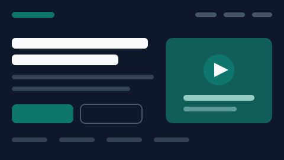
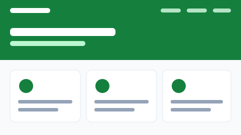

Dashboard SIAKAD
Magang · 2025 · Bootstrap 5, CSS Grid
Halaman ringkasan akademik untuk staf program studi: jumlah mahasiswa aktif, rekap kehadiran, dan grafik nilai per angkatan.
Mahasiswa semester 5 Sistem Informasi yang belajar membangun antarmuka web yang rapi, responsif, dan mudah dipakai.
Enam proyek kuliah dan magang, dari dashboard sampai halaman pendaftaran. Semua dikerjakan dengan HTML dan CSS tanpa JavaScript.
Magang · 2025 · Bootstrap 5, CSS Grid
Halaman ringkasan akademik untuk staf program studi: jumlah mahasiswa aktif, rekap kehadiran, dan grafik nilai per angkatan.

Tugas besar · 2024 · HTML, CSS Flexbox
Katalog enam produk makanan ringan dengan saringan kategori, badge ketersediaan, dan kartu yang tetap rapi saat layar menyempit.

Latihan · 2024 · Bootstrap 5
Halaman pendaftaran kelas pemrograman: hero, tiga paket harga, dan tabel perbandingan fasilitas yang bisa digulir di layar kecil.

KKN · 2025 · HTML, CSS Grid
Profil desa wisata: potensi UMKM, jadwal kegiatan, dan kontak perangkat desa dalam satu halaman yang bisa dibuka dari ponsel.

Tugas · 2024 · Form HTML, aksesibilitas
Form pendaftaran seminar kampus dengan label terlihat, status validasi, dan urutan tab yang bisa ditelusuri dari keyboard.

Proyek mata kuliah · 2025 · HTML, CSS, Figma
Toko online UMKM yang dibangun bertahap sepanjang semester: dari kerangka semantik sampai panel detail produk hasil translasi Figma.